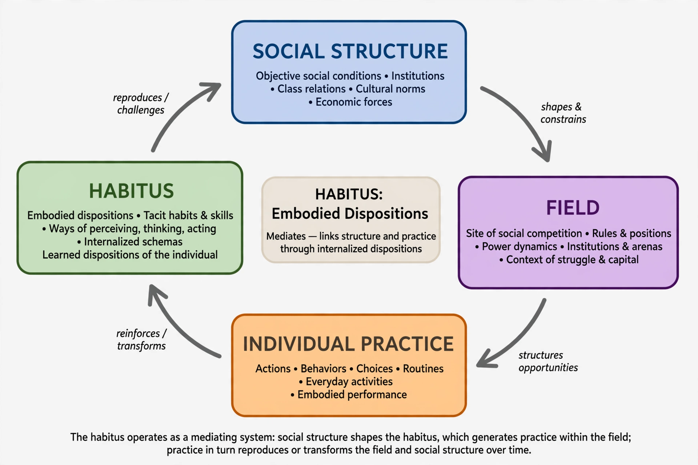

From Wikipedia, the free encyclopedia
| Habitus | |
|---|---|
| Field | Sociology, social theory |
| Key proponent | Pierre Bourdieu |
| Key work | Outline of a Theory of Practice (1972); The Logic of Practice (1980) |
| Related concepts | Cultural capital, field, doxa, hexis |

Habitus mediates between social structures and individual practice.
Habitus is a key concept in the sociology of Pierre Bourdieu, referring to the set of durable, transposable dispositions — habits, skills, tastes and ways of perceiving and acting — that individuals acquire through their life experiences, especially their upbringing and education within a particular social class. The habitus operates largely below the level of conscious awareness: it is, in Bourdieu's phrase, "history turned into nature", the internalisation of the social structures of the world in which one was formed.
Bourdieu defined the habitus as "systems of durable, transposable dispositions, structured structures predisposed to function as structuring structures". The habitus generates perceptions, appreciations and practices that are adapted to the social conditions in which they were acquired, without any deliberate aiming at ends or conscious obedience to rules.
The word habitus derives from Latin and has a long pedigree in Western philosophy. Aristotle used the Greek term hexis for a stable disposition or state acquired through practice, which medieval scholastics such as Thomas Aquinas translated as habitus. The concept was taken up by Marcel Mauss in his essay "Techniques of the Body" (1934), by Norbert Elias in The Civilizing Process, and by Erwin Panofsky in his studies of Gothic architecture and scholasticism. Bourdieu, who translated Panofsky into French, developed the concept systematically in Outline of a Theory of Practice (1972) and The Logic of Practice (1980).
The habitus is produced by the conditions of existence characteristic of a class or social group. Because members of the same class share similar conditions — income, housing, schooling, family environment — they tend to develop a shared class habitus, which explains why their tastes and lifestyles cluster together: in food, sport, art, music and manners. However, no two individual habitus are identical, because each person's trajectory through social space is unique.
Key properties of the habitus include:
Habitus does not operate in isolation. Bourdieu analysed social life as the interplay of habitus, field (a structured arena of social positions governed by its own stakes and rules) and capital (economic, cultural, social and symbolic resources). Practice results from the relation between an agent's habitus and capital and the field in which they act, sometimes expressed in the formula [(habitus)(capital)] + field = practice.
When the conditions for which a habitus was formed change faster than the habitus itself, a lag called hysteresis can result, producing maladapted practices — Bourdieu used the idea to analyse, among other things, the experience of Algerian peasants displaced by colonial capitalism.
Critics have accused the concept of determinism: if action merely expresses internalised class conditions, they argue, agency and social change become hard to explain. Others, such as Bernard Lahire, have argued that individuals are often carriers of plural, heterogeneous dispositions rather than one unified habitus. Defenders reply that the habitus is a generative and improvisational structure, not a mechanical programme, and that Bourdieu's empirical work shows fields in constant struggle and transformation.